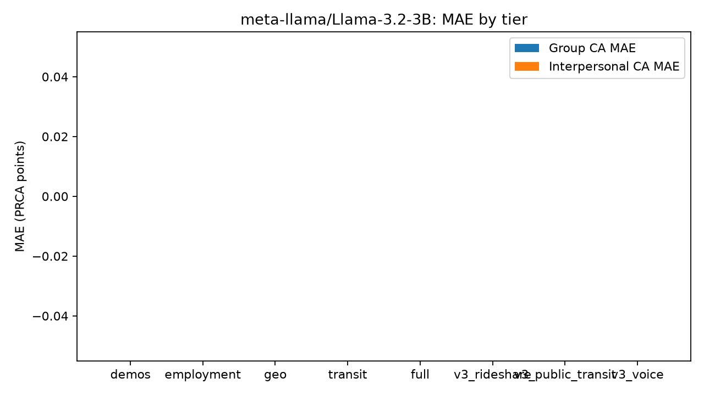
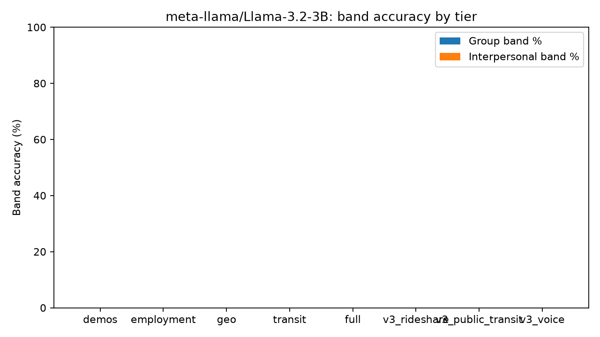
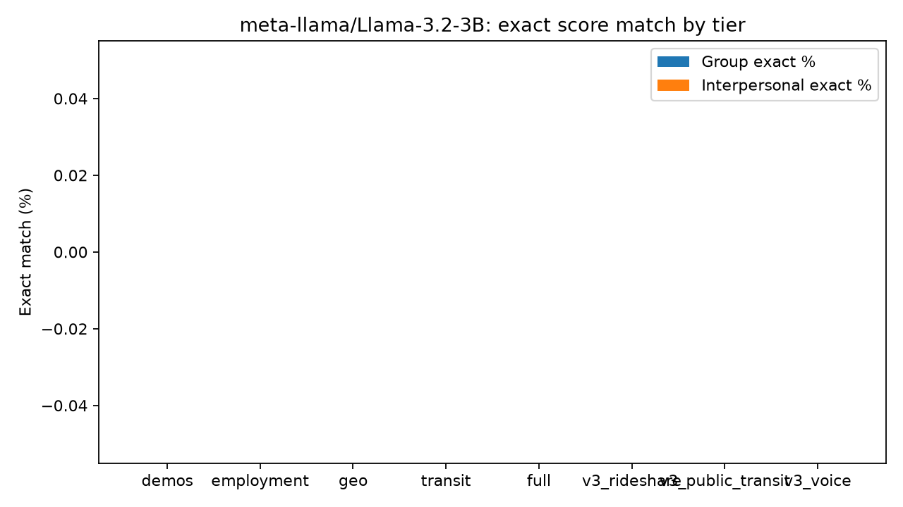

# PSYCH 755 — vLLM Results Report: `meta-llama/Llama-3.2-3B`
**Model tag:** `llama32_3b_v3`
**Sample:** N=241 × 8 tiers = 1928 prompts
**Parse success:** 0/1928 (0.0%)
**Quantization:** fp8
**Throughput:** None samples/s · wall Nones
**Export:** `psych755_vllm_llama32_3b_v3_full_cohort_20260729_1039`
Prompt v3 prior greedy
---
## Overall metrics
| Metric | Value |
|---|---|
| MAE group | NA |
| MAE interpersonal | NA |
| Exact acc group | NA |
| Exact acc interpersonal | NA |
| Band acc group | NA |
| Band acc interpersonal | NA |
## RQ deltas (vs demos)
- **RQ1 employment:** group MAE NA → NA; IP NA → NA
- **RQ2 transit:** group MAE NA → NA; IP NA → NA; IP band NA → NA
- **RQ3 full:** group MAE NA; group band NA → NA; IP MAE NA → NA
## Metrics by tier
tier n_predictions n_with_ground_truth mae_group mae_interpersonal mean_error_group mean_error_interpersonal exact_acc_group mean_norm_score_distance_group band_acc_group n_band_group mean_band_distance_group mean_norm_band_distance_group exact_acc_interpersonal mean_norm_score_distance_interpersonal band_acc_interpersonal n_band_interpersonal mean_band_distance_interpersonal mean_norm_band_distance_interpersonal
all 1928 0 None None None None None None None 0 None None None None None 0 None None
demos 241 0 None None None None None None None 0 None None None None None 0 None None
employment 241 0 None None None None None None None 0 None None None None None 0 None None
full 241 0 None None None None None None None 0 None None None None None 0 None None
geo 241 0 None None None None None None None 0 None None None None None 0 None None
transit 241 0 None None None None None None None 0 None None None None None 0 None None
v3_public_transit 241 0 None None None None None None None 0 None None None None None 0 None None
v3_rideshare 241 0 None None None None None None None 0 None None None None None 0 None None
v3_voice 241 0 None None None None None None None 0 None None None None None 0 None None
## Band confusion (group)
Empty DataFrame
Columns: []
Index: []
## Band confusion (interpersonal)
Empty DataFrame
Columns: []
Index: []
## Success checklist
| Criterion | Result |
|---|---|
| Schema-valid CA JSON | Partial/No (0.0%) |
| Exact digital-twin recovery | No |
| Coarse band recovery | See tier table |


